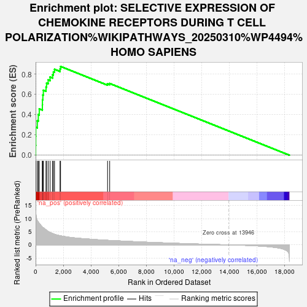

| | | Dataset | ranked_genes |
| Phenotype | NoPhenotypeAvailable |
| Upregulated in class | na_pos |
| GeneSet | SELECTIVE EXPRESSION OF CHEMOKINE RECEPTORS DURING T CELL POLARIZATION%WIKIPATHWAYS_20250310%WP4494%HOMO SAPIENS |
| Enrichment Score (ES) | 0.87707895 |
| Normalized Enrichment Score (NES) | 1.9493182 |
| Nominal p-value | 0.0 |
| FDR q-value | 0.0 |
| FWER p-Value | 0.0 |
Table: GSEA Results Summary

Fig 1: Enrichment plot: SELECTIVE EXPRESSION OF CHEMOKINE RECEPTORS DURING T CELL POLARIZATION%WIKIPATHWAYS_20250310%WP4494%HOMO SAPIENS
Profile of the Running ES Score & Positions of GeneSet Members on the Rank Ordered List
Fig 2: SELECTIVE EXPRESSION OF CHEMOKINE RECEPTORS DURING T CELL POLARIZATION%WIKIPATHWAYS_20250310%WP4494%HOMO SAPIENS: Random ES distribution
Gene set null distribution of ES for SELECTIVE EXPRESSION OF CHEMOKINE RECEPTORS DURING T CELL POLARIZATION%WIKIPATHWAYS_20250310%WP4494%HOMO SAPIENS